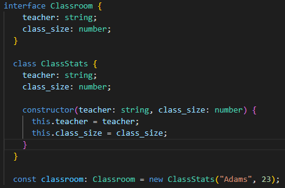

JavaScript and TypeScript have a unique connection. All of JavaScript's functionalities are available in TypeScript, together with TypeScript's type system as an extra layer. JavaScript, for instance, offers language primitives like text and number, but it doesn't verify that you've allocated them consistently. It's TypeScript. This implies that the JavaScript code you currently have in use is also TypeScript. The key advantage of TypeScript is its ability to draw attention to unusual behavior in your code, which reduces the likelihood of defects. This tutorial gives a quick introduction to TypeScript with an emphasis on its type system.
In many situations, TypeScript will build types for you since it is familiar with JavaScript. For instance, TypeScript will use the value as the type when creating a variable and assigning it to a specific value.
A type-system that supports JavaScript programming and has types may be created with TypeScript. This provides a type-system without the requirement to enclose types in additional characters in your code. That is how TypeScript in the example above recognizes that variable is a string.
Typescript cannot always infer types automatically. To handle this, Typescript allows you to tell it what the types for an object or variable should be. It does this using an extension of the Javascript language. To create an object with an an inferred type which includes something like a name that should be a string and a size that should be a number, you can write:
You can explicitly describe this object's shape using an interface.
You can then declare that a Javascript object conforms to the shape of an interface by using the syntax : TypeName after a variable declaration:
If you tried to declare an object that is not part of the interface, Typescript will display a warning explaining that you can't do that.
This can also be used with classes and is super useful for ensuring new class objects are created with the correct types:

The set of primitive types available in Javascript is boolean, bigint, null, number, string, symbol, and undefined.
These can be used in an interface, but Typescript extends the list with a few more types. any allows anything,
unknown makes someone using the type declares what the type is, never(it’s not possible that this type could happen)
and void(a function which returns undefined or has no return value).
Combining basic types in TypeScript allows you to construct complex ones. There are two popular methods for doing this: using generics and unions.
You may specify that a type might be any number of types by using a union. A boolean type, for instance, can be described as either true or false:
type newBool = true | false;
A popular way to use unions is to describe the set of strings or numbers a value is allowed to be:
type DoorState = "open" | "closed" |
type EvenNumbersUnderTen = 0 | 2 | 4 | 6 | 8;
Unions can also be used in function definitions:
function getLength(obj: string | string[]) {
return obj.length;
}
typeof can be used to learn the type of a variable:
typeof variable === "type"
This can be used in if statements to make functions do different things
dependent upon the type that was passed to the function.
Generics provide variables to types. The example of an array is typical. Without generics, anything might be in an array. Generic arrays can be used to describe the values they contain. EXAMPLES